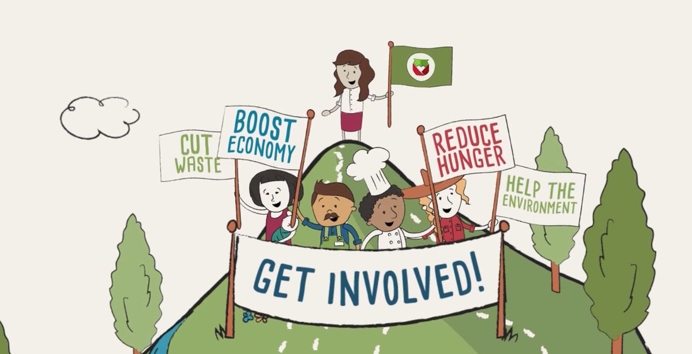

Home
Problem
Machine Learning
What are we doing
What can you do?
Data
Food Waste
How much food are we wasting?

What can you do?
Addison, Jessica, and Ivan
Things you can start doing today!
Shop smart and realistically.
When cooking, don't over-serve food.
Save – and actually eat – leftovers.
Store food in the right places.
Avoid clutter in your fridge, pantry and freezer.
Treat expiration and sell-by dates as guidelines.
Keep track of what you throw away.
Donate to food banks and farms.
Try canning and pickling.
Food Banks Across The U.S.